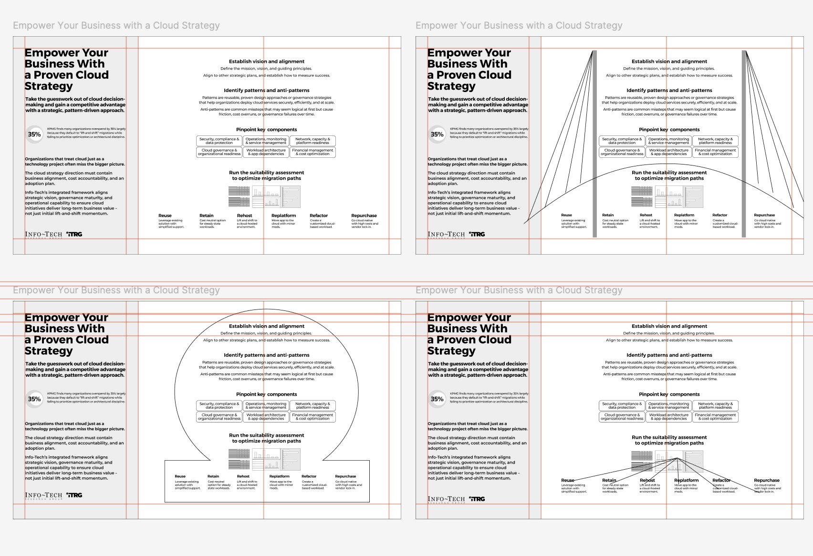
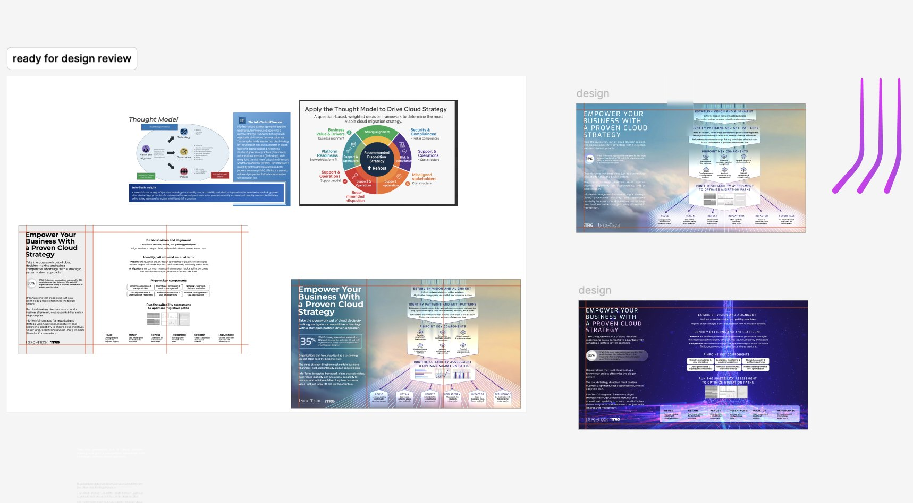
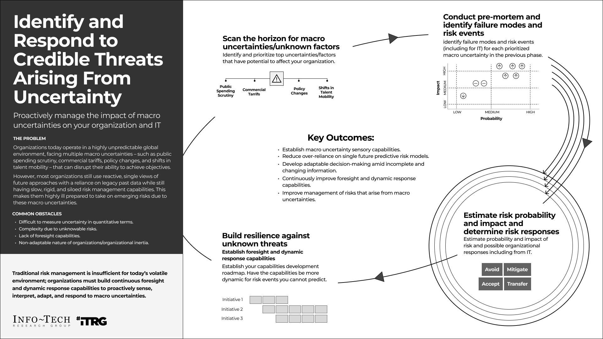

Research Infographics
Visual frameworks that distill Info-Tech research blueprints into a single, scannable image for IT leaders.
- Company
- Info-Tech Research Group
- Timeline
- 2019–present
- Tools
- Figma, Illustrator, Photoshop, Midjourney
- Format
- One-page research visuals
About this work
Each Info-Tech research blueprint is a deep, multi-phase guide for IT leaders. I design the one-page visual framework (known internally as a "thought model") that sums up the whole method, so readers can grasp it at a glance before diving into the detail.
I work with the research team that owns each blueprint and a UX designer, who wireframes the structure. From there I own the visual design and make the final call on how it looks. I refine the layout in Figma, build the diagram and icons in Illustrator, and finish the composition in Photoshop, using Midjourney to generate atmospheric background imagery. The design team then reviews each piece, and I refine it based on their feedback.
Selected work
![Infographic titled Empower Your Business With a Proven Cloud Strategy, set against a soft sky of blue, peach and lavender clouds. The left side gives the case for a cloud strategy, highlighting a KPMG finding that many organizations overspend by 35 percent. On the right, stacked panels flow downward like a funnel: establish vision and alignment, identify patterns and antipatterns, pinpoint six key components, and run the suitability assessment. Light beams then fan out to six migration paths: reuse, retain, rehost, replatform, refactor and repurchase.](../images/infographic-cloud-strategy.jpg)
Process

1. Wireframes by a UX designer: four ways to frame the same content, as a starting point for the visual direction.

2. Design review. From the research team's draft model and the wireframe to my colour directions, prepared for review with the design team.
Empower Your Business With a Proven Cloud Strategy
A pattern-driven path from vision and alignment through to choosing how each workload moves to the cloud.
View the research blueprint →![Infographic titled Identify and Respond to Credible Threats Arising From Global Uncertainty, in glowing teal and purple on a dark starfield. A left panel sets out the problem and common obstacles. On the right, four numbered phases circle a Key Outcomes box, joined by curved light trails: Phase 1, scan the horizon for macro uncertainties such as tariffs and policy changes; Phase 2, run a premortem and plot risk events on an impact and probability grid; Phase 3, choose a response (avoid, transfer, accept, mitigate); Phase 4, build resilience with a quarterly release roadmap.](../images/infographic-global-uncertainty.jpg)
Process

1. Wireframe by a UX designer, setting out the structure and content.

2. Visual exploration. My colour directions, iterations and ring motifs in Figma, with imagery generated in Midjourney.
Identify and Respond to Credible Threats Arising From Global Uncertainty
A four-phase method for scanning macro uncertainties, running premortems, estimating risk and building adaptive responses.
View the research blueprint →![Infographic titled Manage Security and Privacy Risks for Generative AI, on a dark magenta background. A glowing sphere labelled Generative AI: Security and Privacy Risks sits at the centre. Lines on the left lead to four risk mitigation essentials: AI suitability test, AI security policy, generative AI risk map, and data security improvement plan. Lines on the right branch into public and private AI systems, mapping risk scenarios (data exposure, bad data) to risk categories (data confidentiality, data integrity) and to attacks on generative AI (weaponization, data exfiltration, input attacks, data poisoning, sponge attacks).](../images/infographic-genai-security.jpg)
Address Security and Privacy Risks for Generative AI
How security leaders can understand generative AI risks, set acceptable-use criteria and plan data security improvements.
View the research blueprint →Created for Info-Tech Research Group.